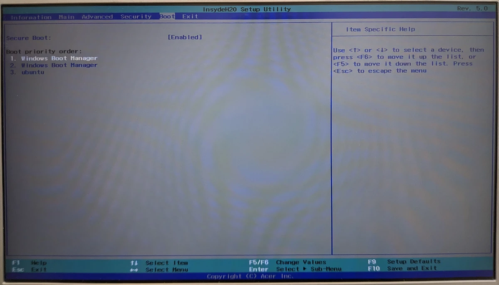
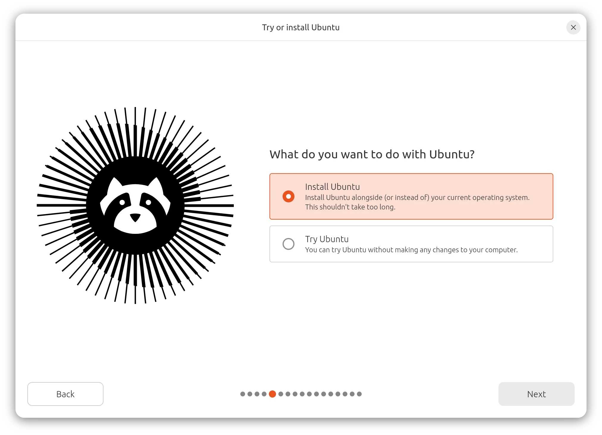
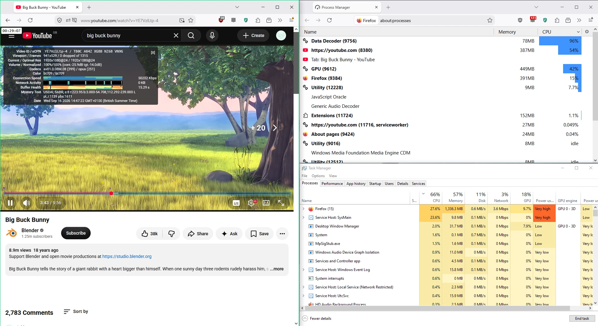
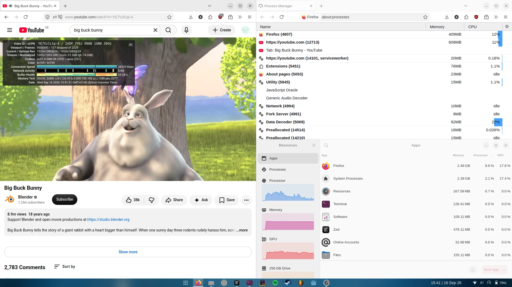
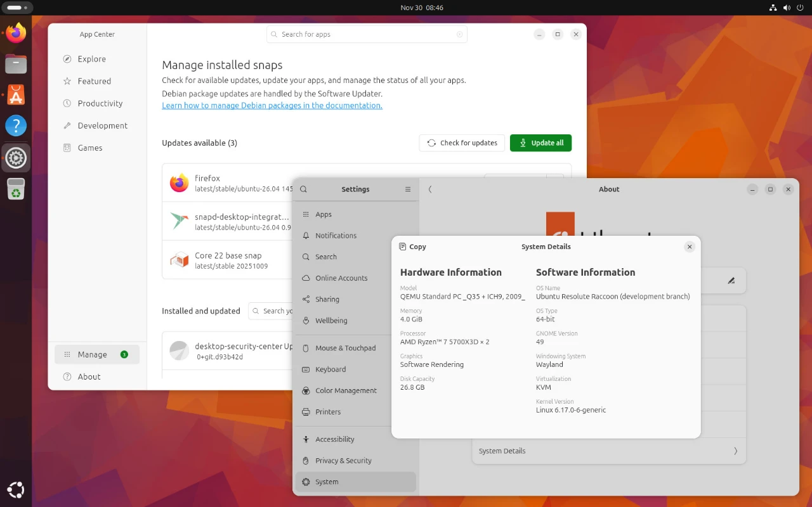
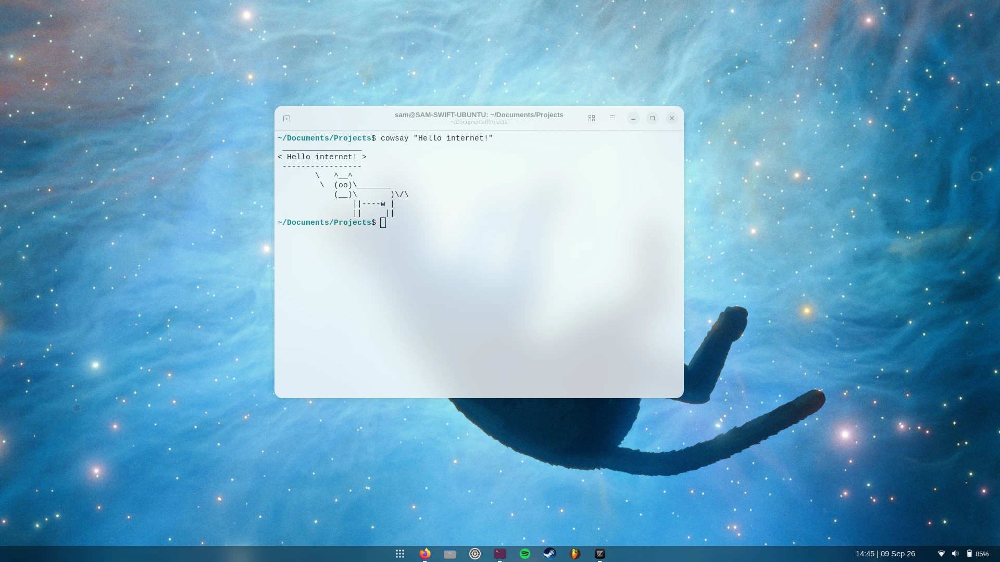

Switching to Linux on my home laptop
2026 is the year of Linux Desktop! But really this time
I’m typing this blog post on an Acer Swift 3 laptop, running an 8th-gen Intel Core i5 processor, purchased in 2019 and shipped with Windows 10. In recent years, the laptop has been slowing down significantly. While some of this is inevitable and understandable (security patches, component failures, etc.), I suspect much of the slowdown is not for technical reasons, and more for ‘big tech’ reasons*.
My initial assumption was that the laptop was simply not keeping up with the times, and I needed a new one. When searching for a replacement, I wasn’t able to find a MacBook at the specs and price point I was comfortable with; on the other hand, I wasn’t looking forward to a forced upgrade to the motherlode of AI slop, Windows 11. Seconds before putting in the order for a new laptop (literally!), I was reminded of all the times I’d discussed and used Linux desktops: a friend who recently demoed his Arch Linux setup… another friend who runs Nix on everything… then of my own Raspberry Pi which has a (slow but usable) GUI… and of my own time using Debian PCs at university.
So after years of complaining about commercial operating systems, I’ve finally stopped putting my money where my mouth isn’t, and replaced Windows with Ubuntu. In this post, I’ll document my installation process, attempt to convince you that 2026 really is the Year of Linux Desktop, and that you might want to consider trying it out for yourself.
Aside: which Linux?
One of the more confusing steps when switching to Linux is choosing a Linux distribution (or ‘distro’). Some distros are obviously designed for certain use-cases: OpenWrt is for low-powered devices, and Arch Linux is for… the cool kids. This leaves a small handful of options which seem fairly identical feature-wise & setup-wise.
I chose Ubuntu somewhat arbitrarily, though some contributing factors were that it’s a name I recognise, and promises a simple setup. Only later did I learn that Ubuntu is maintained by a private company and has been known to insert ads into the OS… oops. I don’t know how easy it would be to change this decision in the future, but let’s focus on one OS migration at a time, eh?
Bye Bye Windows
Getting my laptop to boot anything other than Windows was surprisingly tricky. Having used portable Linux distros and Windows USB Recovery drives in the past, I assumed all I would need to do is make a bootable Ubuntu install disk, boot into that, and install Ubuntu into a new partition. The Ubuntu Foundation has an excellent install guide for making bootable media, but despite my best efforts and many USB formats, my laptop’s UEFI (fancy word for BIOS) could not be convinced into booting into, or even noticing, the USB drive.

Having read through a small handful of StackExchange and forum posts about my laptop model - the Acer Swift 3 SF314-54 - it became clear that this machine is unusually stuborn about dual booting. No combination of UEFI Secure Boot, Fast Boot or drive formats would allow a USB drive to be booted. The PXE boot option also seemed to do nothing.
At this stage, I was close to writing off the project, shaking my fist at the metaphorical Acer logo in the sky, and clicking Buy Now on the new laptop. As a last-ditch effort, I tried creating an 8GB parition on my hard drive and extracting the Ubuntu install ISO directly into it, which mercifully suceeded! (At the same time, I followed this helpful StackExchange guide to expose rEFInd as a boot option, though I don’t think this was necessary because I never actually booted into rEFInd.)

I’m disappointed in how difficult Acer made it to boot into anything other than Windows, and hope that it becomes easier as demand for non-US software grows. I understand that some resistance is good for security, but an authenticated administrator should be able to do what they want. It’s confusing processes like this that are prevening the less tech-savvy majority of users from trying out other operating systems!
Now that I’m logged in and running on the proper install, it’s time to test out the laptop’s performance. I loaded up a YouTube and started a 1080p video - something that would previously have sent my laptop’s temperature flying* - and didn’t notice a speck of overheating. Hallelujah!
 |
 |
|---|---|
| Windows 10 - CPU temperature ~80-90°C | Ubuntu 26.04 - CPU temperature ~50°C |
Customize ALL the things!
Hackers are surprisingly good at restyling the Windows UI, but at the end of the day, it’s a hack, and Microsoft can send an update to lock you out at any moment. With Linux (or more specifically, the GNOME UI that runs on Linux), you can change pretty much anything you want.
When you first log into a fresh Ubuntu install, it’ll look something like this:

Personally, I think screenshots like this are what puts a lot of people off of Linux - it’s just too different to the ‘normal’ desktop OSes. Thankfully, we have GNOME Extensions - a whole ecosystem of mods and addons for everything that you see in the OS.
I followed this guide to, ironically, restyle the GUI to something more like Windows 11, then I tweaked the settings to my own liking. As of right now, I’m using the following extensions and assets:
- Dash to Panel
- Blur my Shell
- Date Menu Formatter
- Three Finger Show Desktop
- KAIZ’s beautiful Bibata Modern Ice cursors
Here’s what my laptop screen now looks like:

Very stylish if I do say so myself! I’ll probably change it again in future.
The less-easy steps
Two nontrivial tasks come to mind: configuring input/UX behaviour to match what you’re used to; and apps that are only made for Windows.
Firstly, on config: getting all the hotkeys and touchpad behaiours to work as you expect can take quite a while, and usually involves arcane commands to tweak GNOME utilities that you’ve never heard of. For me, the fact that it’s customizable at all makes me happy enough to slog through the config.
For Windows-only applications: the good new is it seems to be a very small list these days! I was surprised how many programs have a Linux build that I thought were Windows/Mac-exclusive. For the remainder, there are compatibility layers like Wine or Proton that allow most windows executables to run on Linux… once you’ve done all the necessary config. For a program as beastly as FL Studio and its plugins, this becomes quite an ordeal.
The community has created Bottles in an attempt to make wine and its addons/derivatives easier to set up, which is what I used. But Bottle’s own setup and terminology make me wonder whether using wine directly would be an easier start. Once you’ve installed softwrae to the bottle, it’s not clear that you can move it somewhere else. There’s a million options for which ‘runner’ (derivative of wine) to use, which Direct3D comparibility addons to use, which DLLs to add/remove from the environment, etc. Once it’s installed, though, it runs surprisingly well!
The final, most wicked, requirement of setting up DAWs (e.g. FL
Studio) is that they also rely on synesizer or effct plugins, which on
first glance have a standardized, portable file format (VST files), but
actually have wildly different installation prodcedures and file
layouts. It makes migrating from one machine to another really difficult
- you have to retain or re-download the installers for every effect, run
them all, and hope that your project doesn’t contain invalid parameters
on the new machine. Now that FL Studio is running under
wine, there’s additional complexity in that the VSTs may
rely on incompatible DLLs or OS features! So each plugin has a separate
unofficial setup guide floating on the internet. I’ve done one so far
(Serum)
I suspect that achieving parity with my existing FL Studio setup will take a long time.
The bigger picture
Since ~2025, the tech industry has been a pretty unpleasant spectacle to watch and/or partipate in. The companies we work for and the software we’ve grown up with are now affiliated with one of the most economically and environmentally destructive campaigns of all time, and it seems that too many people who should know better are happily going along for the ride.
In this environment, I often feel like turning away from everything ‘techy’ and finding simpler ways to spend my time, but it doesn’t really sit well with me. Just because some people are misusing technology doesn’t mean it’s all bad… So I guess the low-tech, low-energy, self-hosted projects have been much more appealing to me this year. This has also involved swapping out proprietary or gradually-enshittified services with more sustaintable alternatives:
- Swapping from VSCode to Zed
- Swapping from Spotify to a self-hosted Navidrome instance & Symfonium (a little bit - not sure I’ll get there completely)
- Swapping from Unity to Godot (I’ve used Godot before, but not in earnest)
- and now, swappaing Windows for Ubuntu.
(I’ve already used Firefox, Blender and LibreOffice for a number of years, and thoroughly recommend them all!)
I wouldn’t say that the low-tech, open-source hobby is sufficient; I still have plenty of unsolved problems on my radar, such as, “What will I do about the end of sideloading apps on Android? Can I install GrapheneOS on a Google Pixel phone? Will my banking apps still work on an ‘insecure’ GrapheneOS installation?”. But engaging more with open-source technologies helps me see that there are millions more and people who are similarly frustrated and tired of Big Tech, and if enough talented people come together, they will find a solution.
Perhaps most promisingly, the corporate sector is also waking up to Big Tech’s uncomfortable influence on the world. Numerous governments around Europe are swapping out the once-unshakeable Windows + Office365 stack for Linux + LibreOffice. Globally, the Linux marketshare for Desktop PCs is at a record 8.88% in Sept 2026 - 10.4% if you include Chrome OS, which should attract even more usage. If these trends continue… eyy!
So to conclude, there’s never been a better time to move to Linux Desktop - the alternatives are now at an extremly high level of quality, and you’re in great company :)
Return to index.